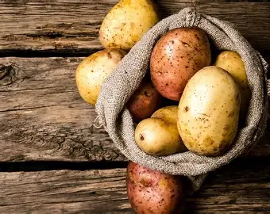
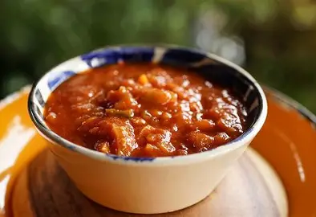
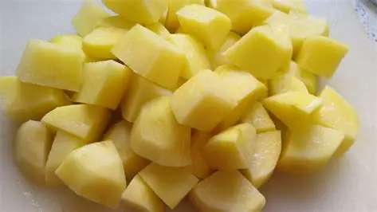

CÓMO COCINAR PATATAS BRAVAS
Ingredientes
- Patatas (800g)
- Aceite de oliva (100ml)
- Salsa brava (200ml)
- Sal (al gusto)
- Alioli (opcional)


Preparación
- Primero pelamos las patatas y las cortamos en cubitos pequeños, así como muestra la imagen

- Calentamos el aceite a 150º y freímos las patatas durante 7 minutos.
Tras esto, las sacamos y las escurrimos en papel de cocina soltando el aceite sobrante
- Subimos la temperatura del aceite a 190º y volvemos a freir las patatas durante 3 minutos hasta que estén doradas y crujientes
- Por último añadimos sal al gusto y la salsa brava. Si lo desea también puede añadir un poco de alioli
¡Listo! Ya puedes disfrutar de unas deliciosas patatas bravas recién hechas.